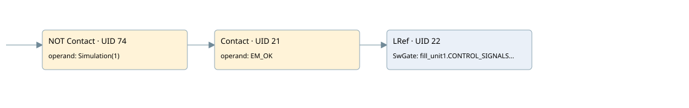

reading encoder mv02
analog input conversion · 검색 색인 순서 27 · 원본 내부 NID 추정 45
백업 PLF 원본의 3139119 바이트 위치에서 복원한 XML. 검색 문서 1757의 객체 키 16102200296b000000000000와 연결했다. 이름 해석 4/25개. 남은 RefId는 상수 또는 미해석 참조다.
연결 구조 다시 그리기
원본 Part/PCon/Wire를 이용한 연결도다. TIA 화면의 래더 배치 또는 실행 결과를 재현한 그림은 아니다. 핀 연결은 아래 표와 원본 XML을 기준으로 읽는다. 노드 위에 마우스를 두면 피연산자 이름을 볼 수 있다.

접점·코일·블록과 피연산자
| Part UID | Gate | Negated 핀 | 연결 피연산자 |
|---|---|---|---|
| 74 | Contact | operand | operand = Simulation(1) |
| 21 | Contact | operand = EM_OK | |
| 22 | LRef | 호출 참조: RefId 330; SwGate = fill_unit1.CONTROL_SIGNALS.SW_GATE1; CaptureEnable = RefId (RefId 없음) / ORef UID 26; SyncEnable = RefId (RefId 없음) / ORef UID 27; ErrorAck = RefId (RefId 없음) / ORef UID 28; EventAck = RefId (RefId 없음) / ORef UID 29; SetCountValue = RefId (RefId 없음) / ORef UID 30; StatusHW = RefId (RefId 없음) / ORef UID 31; StatusGate = RefId (RefId 없음) / ORef UID 32; StatusUp = RefId (RefId 없음) / ORef UID 33; StatusDown = RefId (RefId 없음) / ORef UID 34; CompResult0 = RefId (RefId 없음) / ORef UID 35; CompResult1 = RefId (RefId 없음) / ORef UID 36; SyncStatus = RefId (RefId 없음) / ORef UID 37; CaptureStatus = RefId (RefId 없음) / ORef UID 38; CapturedValue = RefId (RefId 없음) / ORef UID 39; ZeroStatus = RefId (RefId 없음) / ORef UID 40; PosOverflow = RefId (RefId 없음) / ORef UID 41; NegOverflow = RefId (RefId 없음) / ORef UID 42; Error = RefId (RefId 없음) / ORef UID 43; ErrorID = RefId (RefId 없음) / ORef UID 44; CountValue = fill_unit1.ACT_CNTV1; MeasuredValue = RefId (RefId 없음) / ORef UID 46; CompareMeasuredValue = RefId (RefId 없음) / ORef UID 47 |
접점 경로를 펼친 조건식
Contact·O/A·비교기의 원본 연결을 읽기 쉽게 펼친 보조 해석이다. POWER는 전원 레일 시작을 뜻한다. 호출 블록·에지·타이머의 내부 동작과 다중 쓰기 순서는 이 표로 실행 검증하지 않았다. 미해석 핀과 RefId는 원문 연결표에서 확인한다.
| UID | 동작 | 대상 | 원본 접점 경로 | 내용 |
|---|
원본 배선 연결
| Wire UID | 동일 Wire 연결 끝점 |
|---|---|
| 48 | Powerrail {} ↔ Part 74.in |
| 77 | ORef 75 (Simulation(1)) ↔ Part 74.operand |
| 76 | Part 74.out ↔ Part 21.in |
| 49 | ORef 24 (EM_OK) ↔ Part 21.operand |
| 50 | Part 21.out ↔ Part 22.en |
| 51 | ORef 25 (fill_unit1.CONTROL_SIGNALS.SW_GATE1) ↔ Part 22.SwGate |
| 52 | ORef 26 (RefId (RefId 없음)) ↔ Part 22.CaptureEnable |
| 53 | ORef 27 (RefId (RefId 없음)) ↔ Part 22.SyncEnable |
| 54 | ORef 28 (RefId (RefId 없음)) ↔ Part 22.ErrorAck |
| 55 | ORef 29 (RefId (RefId 없음)) ↔ Part 22.EventAck |
| 56 | ORef 30 (RefId (RefId 없음)) ↔ Part 22.SetCountValue |
| 57 | Part 22.StatusHW ↔ ORef 31 (RefId (RefId 없음)) |
| 58 | Part 22.StatusGate ↔ ORef 32 (RefId (RefId 없음)) |
| 59 | Part 22.StatusUp ↔ ORef 33 (RefId (RefId 없음)) |
| 60 | Part 22.StatusDown ↔ ORef 34 (RefId (RefId 없음)) |
| 61 | Part 22.CompResult0 ↔ ORef 35 (RefId (RefId 없음)) |
| 62 | Part 22.CompResult1 ↔ ORef 36 (RefId (RefId 없음)) |
| 63 | Part 22.SyncStatus ↔ ORef 37 (RefId (RefId 없음)) |
| 64 | Part 22.CaptureStatus ↔ ORef 38 (RefId (RefId 없음)) |
| 65 | Part 22.CapturedValue ↔ ORef 39 (RefId (RefId 없음)) |
| 66 | Part 22.ZeroStatus ↔ ORef 40 (RefId (RefId 없음)) |
| 67 | Part 22.PosOverflow ↔ ORef 41 (RefId (RefId 없음)) |
| 68 | Part 22.NegOverflow ↔ ORef 42 (RefId (RefId 없음)) |
| 69 | Part 22.Error ↔ ORef 43 (RefId (RefId 없음)) |
| 70 | Part 22.ErrorID ↔ ORef 44 (RefId (RefId 없음)) |
| 71 | Part 22.CountValue ↔ ORef 45 (fill_unit1.ACT_CNTV1) |
| 72 | Part 22.MeasuredValue ↔ ORef 46 (RefId (RefId 없음)) |
| 73 | Part 22.CompareMeasuredValue ↔ ORef 47 (RefId (RefId 없음)) |
식별자 해석 근거 25개
| ORef UID | RefId | 이름 | IdentXmlPart 파일 | 해석 방법 |
|---|---|---|---|---|
| 75 | 344 | Simulation(1) | 0678-IdentXmlPart.xml | UID/RID + search-text + NID agreement |
| 24 | 173 | EM_OK | 0678-IdentXmlPart.xml | UID/RID + search-text + NID agreement |
| 25 | 222 | fill_unit1.CONTROL_SIGNALS.SW_GATE1 | 0676-IdentXmlPart.xml | UID/RID + search-text + NID agreement |
| 26 | (RefId 없음) | 미해석 RefId | 식별 선언 원본 참조 | 미해석 |
| 27 | (RefId 없음) | 미해석 RefId | 식별 선언 원본 참조 | 미해석 |
| 28 | (RefId 없음) | 미해석 RefId | 식별 선언 원본 참조 | 미해석 |
| 29 | (RefId 없음) | 미해석 RefId | 식별 선언 원본 참조 | 미해석 |
| 30 | (RefId 없음) | 미해석 RefId | 식별 선언 원본 참조 | 미해석 |
| 31 | (RefId 없음) | 미해석 RefId | 식별 선언 원본 참조 | 미해석 |
| 32 | (RefId 없음) | 미해석 RefId | 식별 선언 원본 참조 | 미해석 |
| 33 | (RefId 없음) | 미해석 RefId | 식별 선언 원본 참조 | 미해석 |
| 34 | (RefId 없음) | 미해석 RefId | 식별 선언 원본 참조 | 미해석 |
| 35 | (RefId 없음) | 미해석 RefId | 식별 선언 원본 참조 | 미해석 |
| 36 | (RefId 없음) | 미해석 RefId | 식별 선언 원본 참조 | 미해석 |
| 37 | (RefId 없음) | 미해석 RefId | 식별 선언 원본 참조 | 미해석 |
| 38 | (RefId 없음) | 미해석 RefId | 식별 선언 원본 참조 | 미해석 |
| 39 | (RefId 없음) | 미해석 RefId | 식별 선언 원본 참조 | 미해석 |
| 40 | (RefId 없음) | 미해석 RefId | 식별 선언 원본 참조 | 미해석 |
| 41 | (RefId 없음) | 미해석 RefId | 식별 선언 원본 참조 | 미해석 |
| 42 | (RefId 없음) | 미해석 RefId | 식별 선언 원본 참조 | 미해석 |
| 43 | (RefId 없음) | 미해석 RefId | 식별 선언 원본 참조 | 미해석 |
| 44 | (RefId 없음) | 미해석 RefId | 식별 선언 원본 참조 | 미해석 |
| 45 | 224 | fill_unit1.ACT_CNTV1 | 0676-IdentXmlPart.xml | UID/RID + search-text + NID agreement |
| 46 | (RefId 없음) | 미해석 RefId | 식별 선언 원본 참조 | 미해석 |
| 47 | (RefId 없음) | 미해석 RefId | 식별 선언 원본 참조 | 미해석 |
검색 코드 보조 자료
참조 명칭을 찾기 위한 자료이며 실행 순서나 AND/OR 관계는 위 연결표로 확인한다.
"simulation(1)" "em_ok" high_speed_counter "mv02_encoder" "fill_unit1".control_signals.sw_gate1 "fill_unit1".act_cntv1